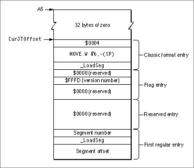

The Jump TableFigure 9-2 shows the structure of a CFM-68K runtime jump table. This jump table is similar to the classic 68K far model jump table as shown in Figure 10-10 (page 10-23). Figure 9-2 CFM-68K runtime jump table structure 
Figure 9-2 CFM-68K runtime jump table structure
